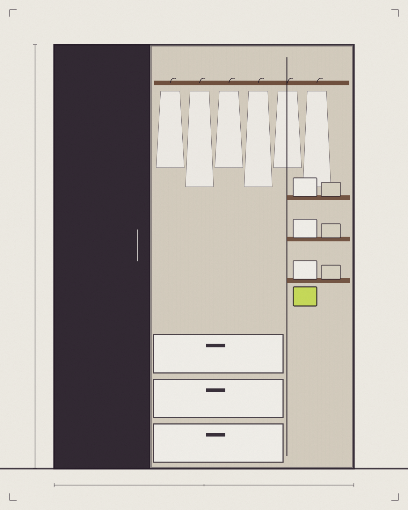
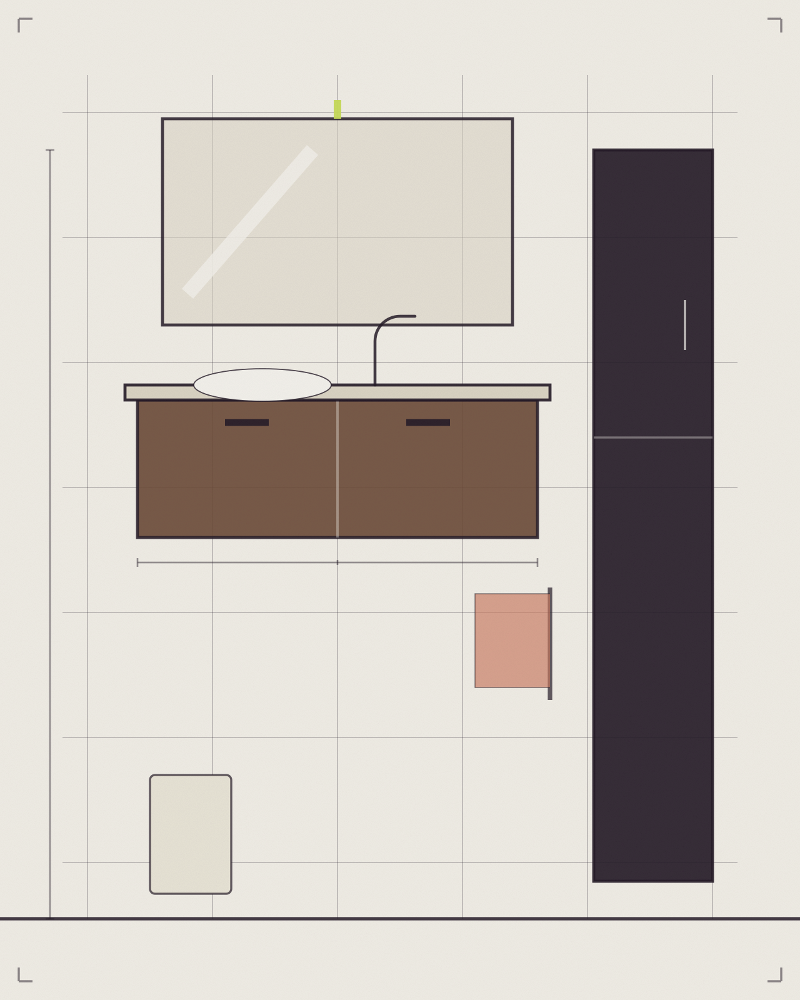
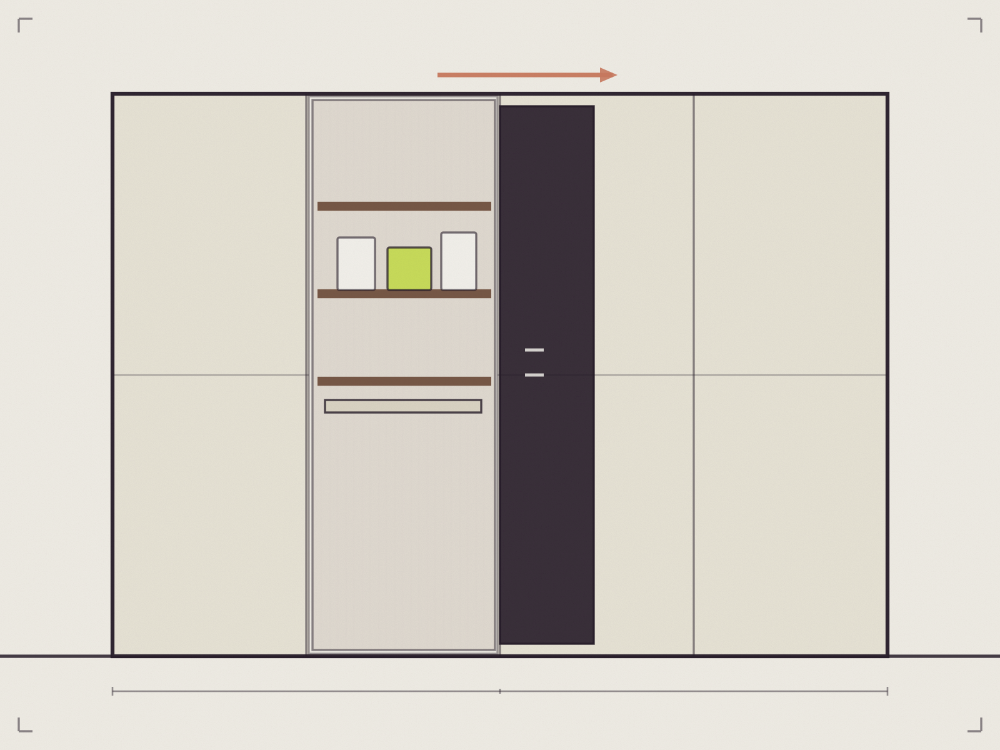

Szafy · łazienki · biura
Ta sama precyzja poza kuchnią.
Meble na wymiar mogą porządkować przedpokój, garderobę, łazienkę i miejsce pracy. Najważniejsze jest to, co ma znaleźć się w środku i jak często będzie używane.

Materiał demonstracyjny
Front zamyka przestrzeń. Projekt zaczyna się za nim.
Drążki, półki, szuflady i miejsca na większe przedmioty powinny odpowiadać rzeczywistej zawartości szafy, a nie przypadkowemu podziałowi katalogowemu.
Mała przestrzeń wymaga dokładnych decyzji.
Zabudowa może wykorzystać miejsce wokół umywalki, instalacji i wnęk, jednocześnie utrzymując spokojny wygląd pomieszczenia.
- zabudowa projektowana wokół przyłączy, nie obok nich
- pełne wykorzystanie wysokości przy małym metrażu
- zamknięte fronty tam, gdzie liczy się porządek

Materiał demonstracyjnyPraca potrzebuje porządku, który nie przeszkadza.
Biurko, przechowywanie dokumentów i miejsce na sprzęt warto zaplanować jako jeden układ — także wtedy, gdy praca dzieje się w salonie albo sypialni.
Dokładny zakres usług biurowych wymaga potwierdzenia przez firmę.
Jedna przestrzeń, wspólny język materiałów.
Kuchnia, szafa w przedpokoju i zabudowa salonu mogą tworzyć spójną całość bez kopiowania identycznych frontów w każdym pomieszczeniu.
Paleta poglądowa systemu demo — konkretne dekory i materiały dobiera się przy projekcie.
Masz przestrzeń, która potrzebuje porządku?
Opisz pomieszczenie i to, co ma się w nim zmieścić — resztą zajmiemy się na pomiarze.